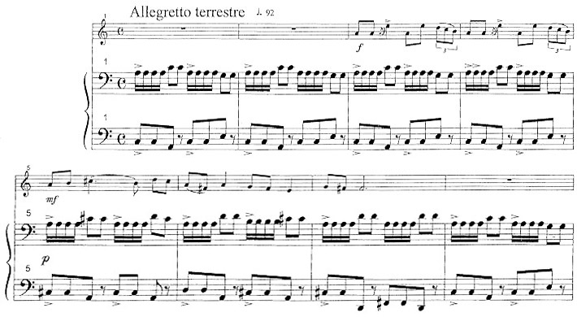

testi di Luisa Pachera
musica di Zoran Milenkovich
ARIETE (21. III – 21.IV)
Quella notte le pecore non erano contente. Nell’ovile erano nati cinque agnellini e temevano che l’uomo entrasse all’improvviso
e li portasse via, come spesso succedeva in quella stagione dell’anno. Decisero di fare qualcosa, così andarono dall’ariete e gli dissero:
“Aiutaci, vogliamo andarcene da questo brutto posto.” L’animale le guardò pensieroso. “Non è possibile”, rispose strusciando le corna sull’erba
del prato, “il recinto è ben chiuso ed è troppo alto per scavalcarlo.” “Smettila di fare il pecorone”, gridò qualcuno dal fondo del gregge, “e usa la
testa!” L’ariete dapprima si offese, poi prese la rincorsa e andò a sbattere con il capo contro lo steccato dell’ovile. Lo fece una volta, due volte, tre,
finché le sue corna aprirono un varco da cui le pecore scapparono ad una ad una. L’ariete le seguì contento.
TORO (21.IV – 21. V)
C’era una volta un toro veramente cattivo. Era un animale bello e fortunato e viveva in un pascolo pieno di erba fresca e di fiori profumati.
Aveva tutto per essere contento e nessuno capiva perché invece fosse sempre arrabbiato. Un giorno un vitello si avvicinò e vide che il toro
se ne stava in mezzo a un prato pieno di papaveri rossi. “Ecco perché è così triste”, pensò, “lui non ama il colore del fuoco...”
Decise di fare qualcosa, chiamò i suoi amici e con loro mangiò ogni fiore vermiglio che c’era lì attorno. Dapprima il toro non fu contento, ringhiò,
soffiò e pestò con gli zoccoli l’erba della radura. Poi la rabbia gli passò e non tornò più. Da quel giorno fu sempre felice di dividere con i nuovi amici
i fiori del pascolo. Non solo quelli rossi, ma anche quelli gialli, azzurri, viola e arancione.

GEMELLI (21. V – 21. VI)
C’erano un tempo due gemelli che erano talmente simili da sembrare uguali. Tutti li confondevano e loro stessi, a volte, si sbagliavano e dovevano
chiedersi a vicenda: “chi sei?, sei tu quello che mi sta davanti o sono io?” Spesso litigavano per cose di poco conto, e non erano contenti,
per niente. Così un giorno decisero di cambiare per rendersi del tutto diversi. Uno si tagliò i capelli, l’altro se li colorò. Uno si vestì di chiaro, l’altro
di scuro. Da quel momento nessuno più li confuse perché erano diventati del tutto differenti. Talmente differenti che ogni tanto provavano nostalgia
del passato e si guardavano nello specchio per ritrovarsi di nuovo in compagnia.
CANCRO (21.VI – 21. VII)
Un giorno un vecchio granchio decise che l’acqua in cui da sempre viveva era troppo salata per i suoi gusti. “Mi sta facendo perdere il mio
bel colore”, disse specchiandosi preoccupato nel mare, “guardate le mie chele come sono ridotte.” “Ma non è vero”, rispondevano gli amici,
“non è il sale che ti fa perdere i colori, ma la vecchiaia.” “Io non sono vecchio!” ribatté il granchio che non voleva sentir parlare di certe cose.
Passarono i giorni e le settimane ed ogni volta che lui si specchiava nell’acqua, si vedeva sempre più grigio. Così decise di andarsene per cercare
uno scoglio dove l’acqua del mare fosse più dolce. Mise le sue cose in una conchiglia e partì. Camminò per un giorno intero, per due, per tre, finché
trovò un angolo di mare talmente sporco che nessuno vi si poteva specchiare dentro. Neanche lui.
LEONE (21. VII – 21. VIII)
Una sera d’estate un leone decise di mangiarsi un gelato alla fragola. Il sole era all’orizzonte, ma l’aria era ancora calda, come sempre all’inizio
di agosto. Chiese a un coccodrillo, a una tigre e a un rinoceronte, ma nessuno aveva un gelato da dargli. Allora si rivolse a un’antilope, non era
fresca e non sapeva di fragola, ma sperava fosse buona lo stesso.
VERGINE (21.VIII – 21. IX)
La ragazza raccolse un fiordaliso nascosto tra le spighe del campo, lo annusò e si spostò vicino ad un melo. Si sedette, chiuse gli occhi
e cominciò a sognare. Ora anche lei era un calabrone che volava sul grano maturo, era una cavalletta che saltava e sprofondava nel mare dorato,
una zanzara che ronzava, un moscerino che ballava, una formica che scalava montagne di fieno. Ed era un’ape che cercava il suo fiore,
una vespa nervosa, una libellula gonfia che si librava sull’erba del prato. Così la ragazza aprì gli occhi e si alzò sbattendo le ali, sorrise e volteggiò
su un cespuglio di more mature, poi planò sul campo sfiorando i covoni di grano e si spinse fin dove il trifoglio s’immergeva nell’acqua del fiume.
BILANCIA (21. IX – 21. X)
Un giorno una bilancia si stufò di essere sempre precisa, sempre uguale e sempre perfetta. “Che noia questa vita”, si disse pesando l’uva
che il contadino aveva appena vendemmiato, “un chilo è un chilogrammo, un etto è un ettogrammo e un grammo è solo un grammo..., devo
fare qualcosa per cambiare.” Decise che era il momento di usare la fantasia e cominciò a pesare le mele in un modo e le pere in un altro.
Dapprima il contadino non se ne accorse, poi si preoccupò ed infine minacciò di metterla in cantina tra le cose vecchie da buttare.
Così la bilancia preferì tornare alla vita di un tempo, perfetta e precisa com’era sempre stata.
SCORPIONE (21. X – 21. XI)
Già da tempo lo scorpione era chiuso nella sua tana. Stava dormendo su una poltrona, quando sentì bussare alla porta. “Chi sarà a quest’ora?”,
si chiese indeciso se alzarsi o rimanere accanto al fuoco del caminetto. Ci pensò un poco, poi si drizzò, aprì la porta e una folata d’aria fredda
entrò nella stanza. Non c’era nessuno. Tornò a sedersi, chiuse gli occhi e dopo un po’ sentì di nuovo il “toc toc” che l’aveva svegliato.
Aprì l’uscio, ma ancora non c’era nessuno. “Chi mai può farmi uno scherzo del genere?”, si chiese lo scorpione preoccupato.
Chiuse di nuovola porta e tornò a sedersi sulla poltrona, mentre in alto la sua coda dondolava fin quasi a toccare la cornice del caminetto. Toc toc.
SAGITTARIO (21. XI – 21. XII)
Una fredda mattina d’inverno un arciere e un cavallo decisero di sfidarsi a vicenda. Il primo avrebbe scoccato una freccia che si sarebbe
conficcata nell’albero in fondo alla radura. Il secondo avrebbe corso più veloce del fulmine e attraversato il prato come una folata di vento.
L’arciere scagliò la freccia. Il cavallo si lanciò nella corsa. Il sagittario esultò per la vittoria, mise l’arco in spalla e tornò a galoppare contento.
CAPRICORNO (21. XI – 21. XI)
Era inverno, dal cielo cadeva la neve lenta e silenziosa. La capretta uscì sul prato e si guardò attorno. Tutto era candido, non c’era un filo d’erba
che spuntasse dal terreno ghiacciato. Dove c’erano i fiori c’era una zolla bianca. Dove c’era un cespuglio c’erano rami secchi e stanchi.
Dove c’era il torrente solo sassi nudi e grigi. “Brrr..., che freddo”, pensò la capretta saltellando qua e là, “è meglio rientrare.” Si girò e vide
un leprotto correre verso il bosco lontano. Provò a seguirlo, scivolò, cadde, si rialzò e tornò alla stalla. Entrò e chiuse l’inverno fuori dalla porta.
ACQUARIO (21.I – 21.II)
Un giorno un ragazzo che portava in spalla una brocca piena d’acqua fresca, ne offrì un sorso ad una vecchietta che sembrava stanca
e accaldata. La donna accettò e sorrise, ne bevve un goccio, poi sfiorò col dito il recipiente che si trasformò in una sorgente continua d’acqua pura
e chiara. Da quel momento il giovane passò il suo tempo a rendere contenta la gente. Ovunque andava riempiva otri, bottiglie e fontane senza mai
svuotare del tutto la sua brocca. E riempiva i fiumi quando erano in secca, bagnava la terra quando era arida e apriva sorgenti nel mezzo dei
boschi. Ogni persona che beveva la sua acqua si sentiva bene, se aveva caldo si rinfrescava e se aveva sete si dissetava. A volte si sentiva
perfino felice.
PESCI (21.II – 21. III)
Un giorno due pesci decisero di lasciare il lago in cui erano vissuti per tutta la vita. Volevano qualcosa di nuovo, sognavano l’avventura.
Salutarono i genitori, i parenti e gli amici e imboccarono il primo torrente che incontrarono. E subito si trovarono in un mondo sconosciuto.
Si guardarono attorno contenti, lì l’acqua era limpida e fresca ed era facile nuotarvi dentro. A dir il vero, era talmente fresca che pareva fredda,
fin troppo fredda. Ed era talmente limpida che sembrava trasparente. Guardando in alto si vedeva il cielo con le nuvole spinte dal vento di marzo.
E si vedevano il sole, le montagne, gli alberi e anche... “Scappiamo”, gridò l’uno allontanandosi in fretta.“Via, via, che ci stanno pescando”, ribatté
l’altro nuotandogli appresso.

inizio pagina
indietro